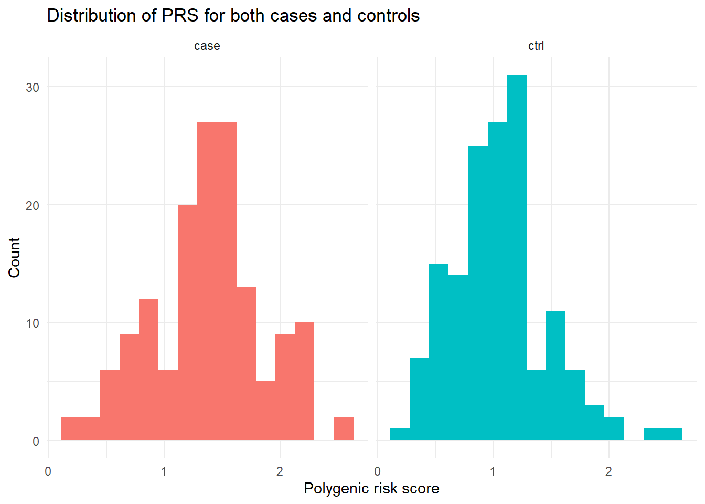
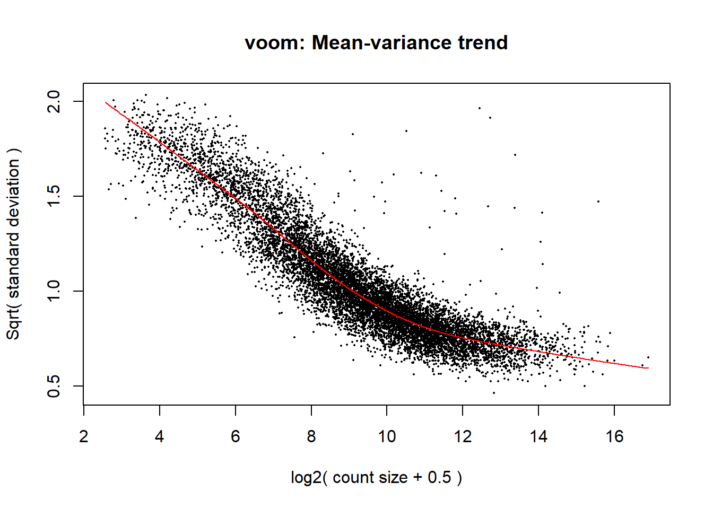
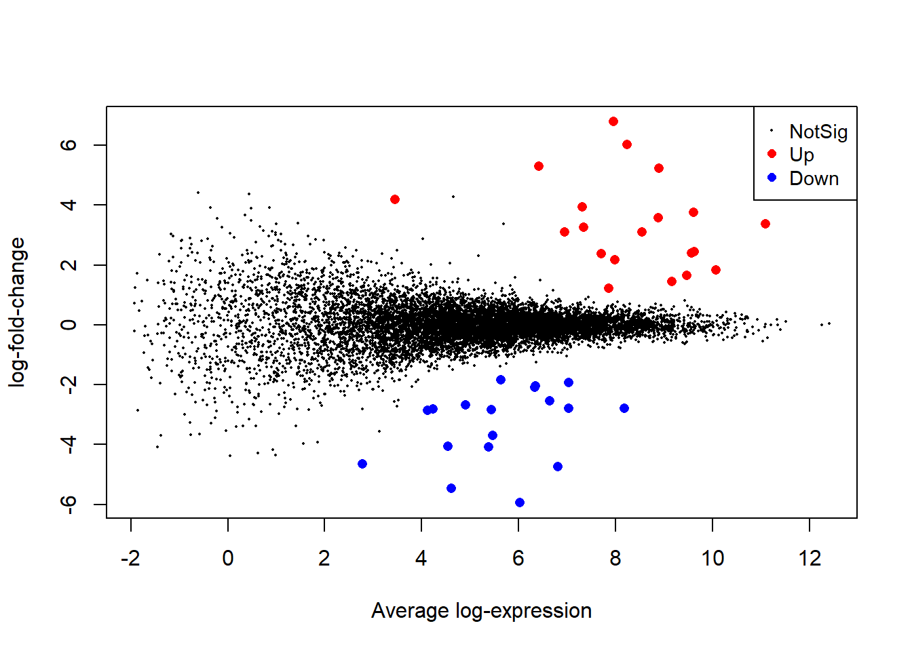

Calculate a PRS for each participant. Which participant has the highest PRS? The lowest?
PRS_full<-ca_co_genotypes |>mutate(PRS=rowSums(select(ca_co_genotypes, starts_with("locus_"))*gwas_top_hits$beta )) #calculate the PRS for each participantPRS_filtered<-PRS_full |>select(donorid, status, starts_with("PRS")) #select the PRS columnPRS_filtered |>slice_max(PRS, n=1) #participant with the highest PRS
# A tibble: 1 × 3
donorid status PRS
<chr> <chr> <dbl>
1 d210 ctrl 2.55
PRS_filtered |>slice_min(PRS, n=1) #participant with the lowest PRS
# A tibble: 1 × 3
donorid status PRS
<chr> <chr> <dbl>
1 d291 ctrl 0.194
Plot and describe (with descriptive statistics) the distribution of PRS for both cases and controls.
PRS_filtered |>summarise(min_PRS=min(PRS),max_PRS=max(PRS),mean_PRS=mean(PRS),median_PRS=median(PRS),sd_PRS=sd(PRS),.by=status ) #descriptive statistics of the distribution of PRS for both cases and controls
#from the descriptive statistics, there is an increase of PRS in cases group compare to the controls group, where the max PRS remain similarggplot(data=PRS_filtered,aes(x=PRS, fill=status))+geom_histogram(bins=15)+#creating a histogram that range into 15 bars, choose 15 is because it is much smoother compare to bins=30 which is the default, and easier to see overall distributionfacet_wrap(~status)+#make two separate plots based on the statuslabs(title="Distribution of PRS for both cases and controls",x="Polygenic risk score",y="Count", )+theme_minimal()+#to minimize background, look bettertheme(legend.position="none") #because each panel is already labelled with case and control, so having the legend is meaningless, therefore it is removed

Is there a statistically significant difference in the PRS of cases and controls? Ensure you check all the assumptions of the test you choose.
#QQ-plot does suggest normality for case, but do not suggest normality for ctrl, confirm normality using Shapiro Wilks testPRS_filtered |>filter(status=="case") |>pull(PRS) |>shapiro.test()
Shapiro-Wilk normality test
data: pull(filter(PRS_filtered, status == "case"), PRS)
W = 0.98725, p-value = 0.1856
Shapiro-Wilk normality test
data: pull(filter(PRS_filtered, status == "ctrl"), PRS)
W = 0.96432, p-value = 0.0006253
#for case, the p value is 0.1856, no evidence against normality#for ctrl, the p value is 0.0006253, very strong evidence against normality#to do a t-test, both group need to meet the normality assumption, since the ctrl group has violated the assumption, t-test is not appropriate here. Wilcox test will be applied here to compare the two groups.wilcox.test(PRS~status, data=PRS_filtered)
Wilcoxon rank sum test with continuity correction
data: PRS by status
W = 16028, p-value = 2.005e-10
alternative hypothesis: true location shift is not equal to 0
#the wilcoxon test statistics value is 16028 with a p-value of 2.005e-10. This suggests a extremely strong evidence that the PRS distribution differ between the Pakinson disease case group and the control group, with case group have higher PRS compare to the control group
23.3.2 RNA-seq of patient iPSC-derived neurons
Firstly, load the packages
library(edgeR)
Warning: package 'edgeR' was built under R version 4.4.2
Loading required package: limma
Warning: package 'limma' was built under R version 4.4.2
library(RNAseq123)
Loading required package: Glimma
Loading required package: gplots
Warning: package 'gplots' was built under R version 4.4.3
---------------------
gplots 3.3.0 loaded:
* Use citation('gplots') for citation info.
* Homepage: https://talgalili.github.io/gplots/
* Report issues: https://github.com/talgalili/gplots/issues
* Ask questions: https://stackoverflow.com/questions/tagged/gplots
* Suppress this message with: suppressPackageStartupMessages(library(gplots))
---------------------
Attaching package: 'gplots'
The following object is masked from 'package:stats':
lowess
Loading required package: RColorBrewer
Loading required package: Mus.musculus
Loading required package: AnnotationDbi
Loading required package: stats4
Loading required package: BiocGenerics
Attaching package: 'BiocGenerics'
The following object is masked from 'package:limma':
plotMA
The following objects are masked from 'package:lubridate':
intersect, setdiff, union
The following objects are masked from 'package:dplyr':
combine, intersect, setdiff, union
The following objects are masked from 'package:stats':
IQR, mad, sd, var, xtabs
Welcome to Bioconductor
Vignettes contain introductory material; view with
'browseVignettes()'. To cite Bioconductor, see
'citation("Biobase")', and for packages 'citation("pkgname")'.
Loading required package: IRanges
Warning: package 'IRanges' was built under R version 4.4.2
Loading required package: S4Vectors
Attaching package: 'S4Vectors'
The following object is masked from 'package:gplots':
space
The following objects are masked from 'package:lubridate':
second, second<-
The following objects are masked from 'package:dplyr':
first, rename
The following object is masked from 'package:tidyr':
expand
The following object is masked from 'package:utils':
findMatches
The following objects are masked from 'package:base':
expand.grid, I, unname
Attaching package: 'IRanges'
The following object is masked from 'package:lubridate':
%within%
The following objects are masked from 'package:dplyr':
collapse, desc, slice
The following object is masked from 'package:purrr':
reduce
The following object is masked from 'package:grDevices':
windows
Attaching package: 'AnnotationDbi'
The following object is masked from 'package:dplyr':
select
Loading required package: OrganismDbi
Loading required package: GenomicFeatures
Loading required package: GenomeInfoDb
Warning: package 'GenomeInfoDb' was built under R version 4.4.2
Warning: package 'R.utils' was built under R version 4.4.3
Loading required package: R.oo
Warning: package 'R.oo' was built under R version 4.4.3
Loading required package: R.methodsS3
R.methodsS3 v1.8.2 (2022-06-13 22:00:14 UTC) successfully loaded. See ?R.methodsS3 for help.
R.oo v1.27.1 (2025-05-02 21:00:05 UTC) successfully loaded. See ?R.oo for help.
Attaching package: 'R.oo'
The following object is masked from 'package:R.methodsS3':
throw
The following object is masked from 'package:GenomicRanges':
trim
The following object is masked from 'package:IRanges':
trim
The following objects are masked from 'package:methods':
getClasses, getMethods
The following objects are masked from 'package:base':
attach, detach, load, save
R.utils v2.13.0 (2025-02-24 21:20:02 UTC) successfully loaded. See ?R.utils for help.
Attaching package: 'R.utils'
The following object is masked from 'package:tidyr':
extract
The following object is masked from 'package:utils':
timestamp
The following objects are masked from 'package:base':
cat, commandArgs, getOption, isOpen, nullfile, parse, use, warnings
Loading required package: TeachingDemos
Warning: package 'TeachingDemos' was built under R version 4.4.3
Loading required package: statmod
Warning: package 'statmod' was built under R version 4.4.3
Loading required package: BiocWorkflowTools
library(limma)library(pheatmap)
Warning: package 'pheatmap' was built under R version 4.4.3
library(ggrepel)
Warning: package 'ggrepel' was built under R version 4.4.3
Which genes are differentially expressed between PD cases and healthy controls? Please also visualise your DE results with appropriate plot(s).
#Firstly, we need to filter our lowly expressed genes to increase our statistical power. To do this, we will use the filterByExpr() function in the edgeR package. This will keep genes with a count of 10 or more in at least 8 samples (as we have 8 samples per group)keep <-filterByExpr(dge)#To check the proportion of genes we have ommited, we can create a proportions table:proportions(table(keep)) #We are keeping 97.77% of our genes
keep
FALSE TRUE
0.02277453 0.97722547
#to apply this filter to the DGE object, we will use [] to filter out FALSE hits (lowly expressed genes) and assign this dgedge <- dge[keep, , keep.lib.sizes =FALSE]#Now we need to normalise our data by converting it to counts per million (CPM), so we can compare samples and groups, and account for RNA composition bias. To do this we will use the TMM method to calculate the normalisation factor for each sample. normLibSizes() function can be used to calculate normalisation factorsdge <-normLibSizes(dge, method ="TMM")#the normalisation factors in dge$samples are close to 1 in all samples, suggesting minimal difference in RNA composition between samples#Now we will fit a linear model using the limma-voom framework by first creating a design matrix to represent covariatesdesign <-model.matrix(~0+ group, data = dge$samples)#We will first need to rename our design matrix to be cleanercolnames(design) <-c("Control", "Case")#Contrast matrixcontr_matrix <-makeContrasts(CasevsControl ="Case - Control",levels = design)v <-voom(dge, design, plot =TRUE)

vfit <-lmFit(v)#apply constrastsvfit <-contrasts.fit(vfit, contrasts = contr_matrix)#statistical testefit <-eBayes(vfit)#decide tests functin to decide if a gene is differentially expressed or notdt <-decideTests(efit)summary(dt)
CasevsControl
Down 18
NotSig 9831
Up 20
top <-topTable(efit, coef ="CasevsControl", number =Inf)#converted to tibble to make it easier to work withtop_tibble <-as_tibble(top)#MA plotlimma::plotMA(efit, coef ="CasevsControl", status = dt[, "CasevsControl"])

Which gene ontology families do the DE genes belong to?
Is the clustering of samples by gene expression consistent with their disease status as cases and controls?
#Now we want to check that our samples group together as we'd expect based on our experimental design, by making an MDS plot. This will show us whether or not the controls group together, and the PD patients group together. To do this, we will use the plotMDS() function and then make the MDS plot in ggplot2plotMDS(dge, labels = dge$samples$group)
#IMPROVE PLOT# From this plot we can see that 5/8 of the PD patient groups cluster to the left of the map, while the other 3 PD patients cluster with the 8 control cases
23.3.3 Drug screening
Using the geom_tile() function, visualise the luminescence across the plate. Do there appear to be any spatial patterns in this data?
Which compounds are statistically significantly associated with increased neuronal viability after MPP exposure? Ensure that you check your assumptions.
What are the mechanisms of action and targets of the compounds you identify in Q2?
23.3.4 Clinical trial
Plot each participants’ gait data and describe it using descriptive statistics. Which of these descriptive statistics do you think is most useful for capturing the overall gait smoothness and balance of a participant?
Is there a statistically significant difference in gait between participants receiving L-DOPA and the new compound? Ensure that you check your assumptions.
Does either of age or the exercise regime affect gait? If so, take this into consideration when investigating the relationship between the treatment and gait.
23.3.5 Bringing it together/linking between datasets
Using their unique donor IDs, how many patients appear across all four arms of the study?
Do any variables other than gene expression distinguish the RNA-seq cases from controls? (Hint: try colouring points on your MDS plot by other information you have about the donors, from the other datasets)
Are any of the gene targets of hit compounds from the drug screen, differentially expressed in RNA-seq? Which GO terms are they associated with and what might this tell you about the pathology of PD?
Is there any relationship between the PRS and gait of patients in the clinical trial?
In a paragraph, summarise your findings and suggest directions for future research.